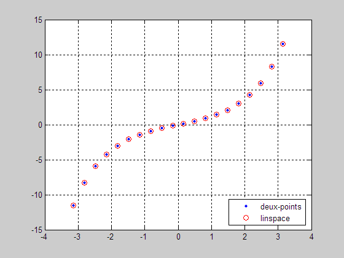

Opérateurs «:» et «'», fonction linspace
Contents
Opérateur deux-points
L'opérateur deux-points est un opérateur très utile. Il crée des indices de vecteur, génère des vecteurs et spécifie les itérations dans une boucle for.
Indices de vecteurs
Indice de départ : incrément : indice de fin
clear; clc; close all; X = [11 12 13 14 15 16 17 18 19 20]; A = X(2:1:5) % (2)début, (1)incrément, 5(fin) B = X(2:5) % L'incrément par défaut est 1. C = X(2:2:10) % L'incrément est 2 D = X(10:-2:2) % sens inverse de C E = X(2:3:10) % indices = 2, 5, 8, 11(est > 10)
A =
12 13 14 15
B =
12 13 14 15
C =
12 14 16 18 20
D =
20 18 16 14 12
E =
12 15 18
Création de vecteurs
F = 2:1:5 % (2)début, (1)incrément, 5(fin) G = 2:5 % L'incrément par défaut est 1. H = 2:2:10 % L'incrément est 2 P = 10:-2:2 % sens inverse de H Q = 2:3:10 % = 2, 5, 8, 11(est > 10)
F =
2 3 4 5
G =
2 3 4 5
H =
2 4 6 8 10
P =
10 8 6 4 2
Q =
2 5 8
L'opérateur deux-points génère une séquence. C'est une boucle implicite comme l'illustre les exemples précédent.
Spécification des itérations dans une boucle for
k = 0; for i = 2:1:5 k = k + 1; R(k) = i; end R
R =
2 3 4 5
k = 0; for i = 5:-1:2 k = k + 1; T(k) = i; end T
T =
5 4 3 2
k = 0; for i = 2:3:10 k = k + 1; V(k) = i; end V
V =
2 5 8
Fonction linspace
La fonction linspace génère une séquence de données régulièrement espacées. Le nom provient d'une contraction de l'anglais linear space. Exemple :
Générer 20 points pour tracer le sinus hyperbolique de -pi à +pi. Il y a donc 19 intervalles.
increment = 2*pi/19;
x = -pi : increment : +pi;
y = sinh(x) ; % opération vectorisée
La fonction linspace simplifie l'écriture.
linspace(début, fin, nombre de points)
xx = linspace(-pi,+pi,20); yy = sinh(xx); plot(x,y,'.b'); grid on; hold on; plot(xx,yy,'or'); legend('deux-points','linspace','Location','Best');

Apostrophe
L'opérateur apostrophe permet de transposer une matrice.
M = [ 11 12 13 14 21 22 23 24 31 32 33 34] Mt = M'
M =
11 12 13 14
21 22 23 24
31 32 33 34
Mt =
11 21 31
12 22 32
13 23 33
14 24 34
Un vecteur est considéré comme une matrice.
A % vecteur rangée Ac = A' % vecteur colonne Ar = Ac' % vecteur rangée à nouveau
A =
12 13 14 15
Ac =
12
13
14
15
Ar =
12 13 14 15